Convex & Optimizations
Chapter 1. Overview
进入本章前复习基础的数学知识：
Vector Norms（范数）：对于向量 $x=(x_1,x_2,\ldots,x_n)$，$l_p$-norm 定义为：
正定性：$||x||_p\ge0,\space||x||_p=0\space\iff x=0$；
非线性性：$||tx||=|t|\space||x||,\space t\in\mathbf{R}$，$||x+y||\le||x||+||y||$（这个不等式并不好证。好证的三角不等式仅限于范数为 2 的特殊情况）；
正交阵 $A^TA=I$，因此一定满秩。此外正交阵列向量（或行）一定是相互正交的向量组，且模长为 1（单位正交向量，否则 $A^TA$ 就不是单位向量了）。
正交阵可以进行对角化 $A=P^{-1}BP$（$B$ 为对角阵，$P$ 为满秩矩阵）。所谓对角化可以感性理解为将这些正交向量组移动到与给定坐标轴的单位向量方向一致的方向上。
正交变换非常好的性质是 保范性。向量经过正交变换后，范数不变（形象理解为几何形状不变）。
实对称矩阵与实二次型一一对应。
实对称阵可以不满秩。但是一定有 $n$ 个实特征值（如果有 $k$ 个相等的特征值，称该特征值为 $k$ 重特征值），或者说 $r(A)$ 个不同的实特征值。
不相同的实特征值对应的特征向量 必定相互正交。
实对称阵可以进行谱分解（或称特征分解） $A=Q\Lambda Q^T$，可以证明 $Q$ 的每一列都是 $A$ 的一个特征向量（所以 $Q$ 是正交阵），$\Lambda$ 是对角阵，每个对角元对应一个 $A$ 的特征值。
Positive definite / positive semi-definite Matrices (正定阵和半正定阵)：若对于任意的 $n$ 维向量 $x\in\mathbf{R}^n$，都有 $x^TAx\ge0$，则称 $A$ 为半正定阵。正定阵是特殊的实对称矩阵，它对应的二次型是正定二次型。正定阵的判定方法如下：
矩阵为对称矩阵，且特征值均为正；
矩阵为对称矩阵，且主元符号均为正；
矩阵为对称矩阵，其子行列式均为正；
1.1 Mathematical Optimization
数学上对于优化问题的定义是：
其中
- $x=(x_1,\ldots,x_n)$ 被称为优化变量（optimization variables）;
- $f_0:\mathbf{R}^n\rightarrow\mathbf{R}$ 被称为目标函数（objective function）;
$f_i:\mathbf{R}^n\rightarrow\mathbf{R},i\in[1,m]$ 被称为约束函数（constraint functions）；
将使得 $f_0$ 取得最小值，且满足约束条件的向量 $x^*$ 称为最优解（optimal solution）；
常见的应用实例有：
portfolio optimization（投资组合优化）：
- variables: 在不同 assets 上投资的数量；
- constraints: budgets、每个 asset 所能分配的最大/最小金额、最小回报；
- objective：总体风险，或者回报额；
device sizing in electronic circuits（电路设计）：
- variables: device widths and lengths；
- constraints: manufacturing limits, timing requirements, maximum area；
- objective: power consumption；
data fitting
- variables: model parameters；
- constraints: prior information, parameter limits；
- objective: measure of misfit or prediction error；
1.2 Solving Optimization Problems
数学上如何解决这些优化问题？实际上，对于一般的优化问题，相当难以求解，可能是 NP 问题，或者说不能在多项式时间内解决的问题。
但是我们其中有一类问题是特例，人们研究出了能够高效、可靠解决这类问题的方法，它们就是 凸优化问题（Convex Optimization Problem），包括但不限于最小二乘、线性规划、二次规划等等。
1.2.1 Least-Squares
最小二乘问题的目标是 $minimize\quad||Ax-b||_2^2$
目前有准确的解析解：$x^*=(A^TA)^{-1}A^Tb$，软件可以作出精确、高效地解析和运算（时间复杂度 $O(n^2k)$ 其中 $A\in\mathbf{R}^{k\times n}$）；
注：软件层面并不是直接使用解析解运算。有些问题即便没有解析解，也能很简单地运算。解析解是在数学讨论的范围内。
1.2.2 Linear Programming (LP)
此后会具体阐述的问题。线性规划的定义是：
这里一般性线性规划没有解析解，但是借助数学工具，可以以确定的算法步骤，高效可靠地得到答案，时间复杂度 $O(n^2m)$；
它不像 Least-Square 一样好识别，需要问题转换的技巧；
1.2.3 Convex Optimization Problem
其中目标函数、约束函数都是凸函数。凸函数定义为：
其中 $\alpha+\beta=1,\space\alpha\ge0,\space\beta\ge0$；
补充：仿射函数定义为 $f_i(\alpha x+\beta y)=\alpha f_i(x)+\beta f_i(y)$；
- 线性规划、最小二乘法都是 Convex Optimization Problem 的特例；
- 没有解析解，但有确定的算法步骤，高效可靠地得到答案，时间复杂度大致为 $\max\left\{n^3,n^2m,F\right\}$，其中 $F$ 为找到 $f_i$ 的一阶、二阶导数（偏导）所需的复杂度；
- 难以识别，需要一些技巧。
1.2.4 Nonlinear Optimization (NLP) & Integer
- Local Optimization Methods：选好 initial guess，在 feasible point 周围进行优化；
- Global Optimization Methods：类似穷极法；
Chapter 2. Convex Sets
2.1 Affine Set
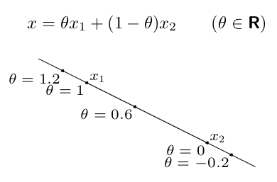
仿射集的定义：如果一个仿射集同时包含了点 $x_1$ 和 $x_2$，且二者不相同，那么通过 $x_1$ 和 $x_2$ 直线上所有点的集合都在这个仿射集中。使用 $x=\theta x_1+(1-\theta)x_2$ 表示。
注意，$x$ 是个向量（或者说坐标点）。随着 $\theta$ 的变动，表示的点在直线上滑动。
举例：线性不等式的解集就是一种仿射集 $\left\{x|Ax=b\right\}$（相反地，所有仿射集都能表示为一个线性不等式的解集）；
证明前者：若 $x_1$ 和 $x_2$ 为 $Ax=b$ 的两个不相等的解，那么 $Ax_1=b$，$Ax_2=b$，因此 $A(\theta x_1+(1-\theta)x_2)=\theta Ax_1+(1-\theta)Ax_2=\theta b+(1-\theta)b=b$；
（可以由 “线性性” 得到这个结论）
2.2 Convex Set
凸集的定义：如果 $x_1$ 和 $x_2$ 是凸集的相异两点，那么 $x_1$ 和 $x_2$ 组成的线段上的所有点也在该凸集内。
数学表示：$C$ 为凸集 $\Longleftrightarrow$ $\forall x_1,x_2\in C,\space x_1\ne x_2,\space 0\le\theta\le1\Rightarrow \theta x_1+(1-\theta)x_2\in C$；
在 $x_1$ 到 $x_2$ 的线段上的所有点可以由 $x=\theta x_1+(1-\theta)x_2,\space0\le\theta\le1$ 表示。
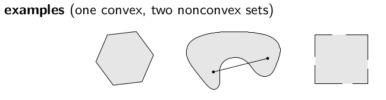
2.3 Convex Combination, Convex Hull & Convex Cone
凸组合的定义：对于一组点 $x_1,\ldots,x_k$，任何可以由 $x=\theta_1x_1+\theta_2x_2+\cdots+\theta_kx_k$ （$\sum\limits_{i=1}^{i=k}\theta_i=1$，$\theta_i\ge0$）表示的点，所构成的集合称为 $x_1,\ldots,x_k$ 的凸组合。
凸组合的仿射系数和为 1.
一个凸集就是其任意相异两点 $x_1,x_2$ 的凸组合。所以凸集是一种凸组合。
凸包（Convex Hull）的定义：对于一个点集 $S$，$S$ 中所有点的凸组合就称为 $S$ 的凸包，记作 $conv\space S$；
形象的理解就是 用橡皮筋把最外围的点都包了起来，之后形成的图形，其内部所有的点都包含于凸包。
注意！凸包中的点的凸组合不唯一。一个点可以在其他若干个点的多种凸组合中。
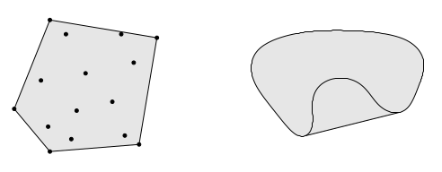
锥组合（Conic Combination）的定义：对于任意两个相异点 $x_1,x_2$，任何可以由 $x=\theta_1x_1+\theta_2x_2,\space \theta_1,\theta_2\ge0$ 表示的点，所构成的集合称为 $x_1,x_2$ 的锥组合。
注意：锥组合没有要求仿射系数和为 1，因此并不能说锥组合等同于凸集；
凸锥（Convex Cone）的定义：对于一个点集 $S$，$S$ 中所有点的锥组合就称为 $S$ 的凸锥；
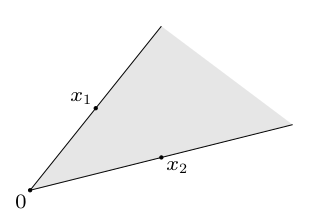
小小总结一下：
对于 $S=\left\{x|x=\theta_1x_1+\theta_2x_2\right\}$，其中 $x_1,x_2$ 为相异两点，
如果 $\theta_1,\theta_2$ 是普通的变量，那么称 $S$ 为 $x_1,x_2$ 的线性组合；
如果 $\theta_1,\theta_2\ge0$，那么称 $S$ 为 $x_1,x_2$ 的锥组合；
几何角度的锥组合：$S$ 所代表的区域内任意相异两点，满足原点到该两点连线方向的射线所包围区域中的点都在这个集合内；
如果 $\theta_1+\theta_2=1$，那么称 $S$ 为包含 $x_1,x_2$ 的仿射集；
几何角度的仿射集：$S$ 所代表的区域内任意相异两点所在的直线上的点都在这个集合内；
如果 $\theta_1,\theta_2\ge0$ 且 $\theta_1+\theta_2=1$，那么称 $S$ 为 $x_1,x_2$ 的凸组合，或者说 $S$ 是一个包含 $x_1,x_2$ 的凸集（但没有“凸组合”准确，因为凸组合中的点可以只由 $x_1,x_2$ 凸组合而成）。
几何角度的凸组合：$S$ 所代表的区域内任意相异两点所在的线段上的点都在这个集合内；
2.4 Hyperplanes & Halfspaces
超平面的定义：$\left\{x|a^Tx=b\right\}$，其中 $a\ne0$（$a$ 为普通向量，0 代表零向量）；
半空间的定义：$\left\{x|a^Tx\le b\right\}$，其中 $a\ne0$；
从几何角度看，一个 N 元一次线性等式即可代表一个 N 维超平面，其中系数向量 $a$ 是该超平面的法向量（normal vector）。
一个 N 元一次线性不等式即可代表一个 N 维半空间，其中系数向量 $a$ 是指向该半空间界面的外法线方向的法向量。
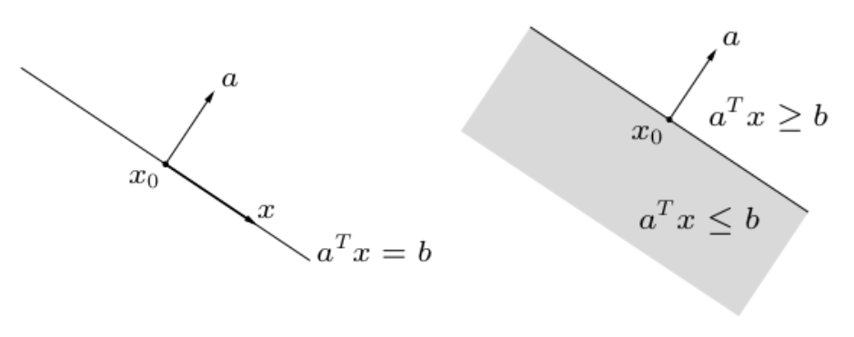
b 向量的值影响的是垂直于 a 方向的超平面 / 半空间的位置；
结论：
hyperplane 既是仿射集，又是凸集；
halfspace 是凸集，但不是仿射集；
回忆一下，仿射集要求集合内任意相异两点的仿射系数和为 1 所表示的点也在这个集合中。在几何角度理解，就是 区域内任意相异两点所在的直线上的点都在这个集合内。
如果不从几何角度理解，就通过数学语言证明。下面以证明 “halfspace 是凸集” 这一命题为例：
假设 $x_1,x_2$ 是 halfspace $S$ 上的任意相异两点。
要证 $S$ 是凸集，即证对 $\forall x=\theta x_1+(1-\theta)x_2,\space\theta\in[0,1]$，都有 $a^Tx\le b$ 成立。
则由条件 $x_1,x_2$ 是 $S$ 上相异两点可知，$a^Tx_1\le b,\space a^Tx_2\le b$；
故 $a^Tx=a^T\theta x_1+a^T(1-\theta)x_2\le \theta b+(1-\theta)b=b$，即 $a^Tx\le b$，原命题得证。
以后对于这类简单的证明不再作赘述。
2.5 Euclidean Balls & Ellipsoids
欧几里得球的定义：对于一个中心点 $x_c$ 和半径 $r$，定义点集：
为欧几里得球；
注：式中的范数符号已定义在 Chapter 1 中，遗忘可以前往复习。
椭球的定义：对于中心点 $x_c$，定义点集：
其中 $P\in\mathbf{S}^n_{++}$ （$P$ 为正定阵，正定阵一定是对称阵），上式也被称为二次不等式（quadratic inequality）。
注意：由解析几何的知识，椭球的半轴向量由 $P$ 的特征向量给出，椭球的半轴长由对应的特征值 $\sqrt{\lambda_i}$ 给出;
因此，$P=r^2I$（$I$ 为单位矩阵）时，椭球就是一个欧几里得球；所以椭球是欧几里得球的泛化（generalization）；
另注：
$\mathbf{S}^n$ 表示 $n$ 阶对称阵组成的集合；
$\mathbf{S}^n_{++}=\left\{X\in S^n|X\succ0\right\}$ 表示所有 $n$ 阶正定阵组成的集合（概率学中的协方差矩阵就是一个正定阵）；
$\mathbf{S}^n_{+}=\left\{X\in S^n|X\succeq0\right\}$ 表示所有 $n$ 阶半正定阵组成的集合；
当然椭球也可以表示为 $E=\left\{x_c+Au|\space||u||_2\le1\right\}$，其中 $A$ 为非奇异方阵。可以形象地理解为 $A$ “记录了椭球各个方向上的半径”。
另外需要注意的是，$P$ 可以唯一表示一个椭球，这意味着 $P$ 与椭球点集一一对应。
但是 $A$ 却不能唯一表示一个椭球。因为对任意正交阵 $Q$（定义 $Q^TQ=I$），$AQ$ 表示的是一个椭球。
证明：
其中 $||u||_2=||Q^Tu||_2$ 由正交阵的保范性（$(Qu)^T(Qu)=u^TQ^TQu=u^Tu\Longrightarrow||Qu||=||u||$）得到。
再但！如果 $A$ 是个正定阵，那么这个表示又唯一了。
结论：欧几里得球、椭球是一个凸集。
2.6 Norm Balls & Norm Cones
范式球的定义：对于中心点 $x_c$ 和半径 $r$，定义点集 $N_B=\left\{x|\space||x-x_c||\le r\right\}$ 为范式球；
欧几里得球就是 2-范数下的范式球（或称 “二阶球”，second-order Euclidean ball）。
范式锥的定义：定义图 $N_C=\left\{(x,t)|\space||x||\le t\right\},\space x\in\mathbf{R}^n，t\in\mathbf{R}$ 为范式锥；
这里的 “图” 和计算机中 “图” 数据结构的概念不同。
这里的 “图” 是数学中的图，表示 “N 维坐标与值的二元组” 的集合，感性理解为：通常将 N 维坐标作为 “横轴”，对应的值为 “纵轴”，作出图形。例如 $\left\{(x,f(x))|x\in\mathbf{R}^n,f(x)\in\mathbf{R}\right\}$ 就是 $n$ 维实函数 $f(x)$ 的图。
这里范式锥的定义实际上是 上境图（epigraph），因为 $t$ 和 $x$ 不是等号关系（函数关系），而是：$||x||\le t$；因此表示的是如下图锥（实心）；
另外，如果将小于等于改为大于等于，那么就是 亚图（hypograph）；
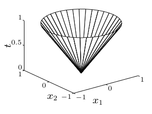
范数为 2 时，范式锥又称为 circular cone（圆锥）；
此时可以写作 $N_C=\left\{(x,t)|\space x^Tx\le t^2\right\},\space x\in\mathbf{R}^n，t\in\mathbf{R}$
结论：范式球、范式锥都是凸集。
2.7 Polyhedra (Polytopes)
多面体 Polyhedron 的复数形式。
这里要讨论的是 polytopes（多胞形，多面体的特殊情况），也就是封闭的多面体。
但有些作者把这两个词含义颠倒了。所以建议使用时，固定一种说法，然后用 “封闭的” 形容词来区分这两种情况。
多面体的定义：可以由一组有限个线性不等式和等式的解集所描述的集合。
其中 $A\in\mathbf{R}^{m\times n},\space C\in\mathbf{R}^{p\times n}$，$\preceq$ 为 component-wise inequality，是逐分量不等号，对每个分量都有一个不等式。这强调的是：$A$ 的每一行的行向量 $a$ 与 $x$ 点积都小于等于向量 $b$ 的对于行的值，即 $ax\le b_i$；这个不等式描述了一个半空间，因此 $Ax\preceq b$ 就描述了一组半空间。
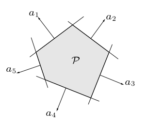
所以说，多面体可以由一组超平面和半空间的交集来表示。
2.8 Positive Semi-definite Cone
半正定锥的定义：对于所有半正定阵构成的集合 $\mathbf{S}^n_+$ 一定是凸锥（这里不再局限于之前讨论的 “点” 了，可以扩展到其他可以通过运算来验证定义的对象上）。这个锥被称为半正定锥。
为什么 $\mathbf{S}^n_+$ 一定是凸锥？因为任意两个半正定阵的锥组合一定还是半正定的（回忆锥组合的定义）。
2.9 Operations that preserve Convexity
介绍不改变凸性的操作。这样做的意义是，可以将上面几种基本的凸形扩展出去，方便证明某些问题的凸性，方便以后转换问题为凸问题。
就像做微积分中的积分问题，我们先讨论几个原子函数，然后通过一些不改变积分值的运算或变换，来得到更复杂函数的积分值。
实际的应用例如，如何判断给定集合是否为凸集？方法如下：
根据凸集的基本定义判断：$C$ is a convex $\Longleftrightarrow x_1,x_2\in C\Rightarrow \theta x_1+(1-\theta)x_2\in C,\space\theta\in[0,1]$；
根据不改变凸性的操作，将问题等价转换为以上基本凸形。
那么哪些操作不改变凸性？
- intersection：取交集。两个凸集的交集仍然是凸集；
- affine functions：仿射变换。一个凸集经过仿射变换、仿射变换逆变换后仍然是凸集；
- perspective functions：透视函数变换。
- linear-fractional functions：线性分式函数变换。
2.9.1 Intersection
我们如何利用交集不改变凸性的性质来解决一些问题呢？
举个例子，$S=\left\{x\in\mathbf{R}^m|\space|p(t)|\le1,\space |t|\le\dfrac{\pi}{3}\right\}$，其中 $p(t)=\sum\limits_{k=1}^mx_k\cos kt$（$p(t)$ 为三角多项式，trigonometric polynomial）就是一个凸集。
怎么证明？想识别这个集合的凸性有点困难，因为 $m\ge5$ 的情况下甚至不能表示出这个集合，所以我们肯定不能用凸集的定义了。
我们想要化简这个集合来方便操作。试想我们定义另一个集合 $S_t=S|_t=\left\{x\in\mathbf{R}^m|\space|p(t)|\le1\right\}$，如果固定 $t$ 为某个常数，情况是不是简单了点？
这个时候 $S$ 集合就是多个 $S_t$ 集合的交集：$S=\bigcap\limits_{|t|\le\pi/3}S_t$，因此我们看看能否证明 $S_t$ 的凸性，就能直接得到 $S$ 的凸性了。
为什么 $S$ 集合是多个 $S_t$ 集合的交集？
可以这么理解，对某个 $t$ 的 $S_t$ 中，可能包含了满足对所有 $|t|\le\dfrac{\pi}{3},|p(t)|\le1$ 的点，也可能包含仅仅在当前的 $t$ 下才满足 $|p(t)|\le1$ 的点。作交集就筛除了不满足 $|t|\le\dfrac{\pi}{3}$ 下 $|p(t)|\le1$ 条件的点。
这就是性质：
结果发现 $S_t$ 相当容易判断凸性，因为这个时候 $p(t)$ 退化为了关于向量 $x$ 的线性约束条件：
这不就是两个半空间所夹成的区域的点集（取交集）吗！我们知道 halfspace 是凸集，两个 halfspce 的交集也是凸集，因此 $S_t$ 是凸集。
因为这里 $t$ 是任意的，所以对所有固定的 $t$ 都有 $S_t$ 是凸集，而 $S$ 是所有 $|t|\le\dfrac{\pi}{3}$ 情况的 $S_t$ 的交集，所以 $S$ 是凸集。
2.9.2 Affine Function
仿射函数定义为：对定义域上任意两个值 $x,y$，对任意的 $\theta\in[0,1]$，都有 $f(\theta x+(1-\theta)y)=\theta f(x)+(1-\theta)f(y)$，因此也是一种非凸非凹的函数。
假设函数 $f:\mathbf{R}^n\rightarrow\mathbf{R}^m$ 是仿射函数（就是线性变换）；
例如自变量为向量的仿射函数 $f(x)=Ax+b$，其中 $A\in\mathbf{R}^{m\times n},b\in\mathbf{R}^m$；
那么凸集关于仿射函数函数的像（或者说凸集经过仿射变换后得到的集合）一定是凸集：
逆变换也是如此。如果一个集合经过仿射变换后的像是凸集，那么原先的集合也是凸集：
甚至这个 $f$ 不是个可逆函数（比如 $f$ 不是单射函数，但 $f$ 作为一个关系而言，是可逆的），上式也成立。
常见的仿射函数有：缩放（scaling）、平移（translation）、投影（projection）等。
仿射函数可以用在哪些题型上？
例如线性矩阵不等式的解集 $\left\{x|x_1A_1+x_2A_2+\cdots+x_mA_m\preceq B\right\}$，其中 $A_i,B\in\mathbf{S}^p$ 。
这个时候，判断这个集合的凸性可以定义一个函数 $f:\mathbf{R}^m\rightarrow\mathbf{S}^p$（将 $m$ 维向量映射到 $p$ 阶对称矩阵上），这个函数定义为 $f(x)=B-\sum\limits_{i=1}^mx_iA_i$。很容易知道 $f$ 的像（集合）一定是一个 positive semi-definite cone（半正定锥，因为对任意的 $x$ 都有 $f(x)\succeq0$，$f(x)\in \mathbf{S}^p$），即凸集，因此原集合（$f(x)$ 的逆像）也是一个凸集。
再例如双曲锥面，$\left\{x|x^TPx\le(c^Tx)^2,\space c^Tx\ge0\right\}$，其中 $P\in\mathbf{S}^n_+$；
判断这个集合为凸集，也可以构造一个函数，$f:\mathbf{R}^n\rightarrow (\mathbf{R}^n,\mathbf{R})$，即 $f(x)=(P^{1/2}x,\space c^Tx)$，其中 $(P^{1/2})^2=P$；$f$ 就是个仿射函数（可以按仿射函数定义来测试），并且 $\left\{(x,t)|\space x^Tx\le t^2\right\},\space x\in\mathbf{R}^n，t\in\mathbf{R}$（二阶范式锥）正好是双曲锥面在 $f$ 上的像，因此双曲锥面是个凸集。
2.9.3 Perspective & Linear-Fractional Function
透视函数定义为 $f:\mathbf{R}^{n+1}\rightarrow\mathbf{R}^n$（所有降低参数 1 个维度的函数）；
例如 $P(x,t)=\dfrac{x}{t}$，$dom\space P=\left\{(x,t)|t\gt0\right\}$；就是一个透视函数。
透视函数的像、逆像中有一个是凸集，那么另一个就是凸集。
线性分式函数是 透视函数 和 仿射函数 的复合，定义为：$f(x)=\dfrac{Ax+b}{C^Tx+d}$，其中 $dom\space f=\left\{c^Tx+d\gt0\right\}$；
线性分式函数的像、逆像中有一个是凸集，那么另一个就是凸集。
2.10 Generalized Inequality
为了定义广义不等式（以便对凸优化进行处理、评价），人们引入了 proper cone（正常锥）的概念。
如果一个凸锥满足：
- K is closed (contains its boundary)
- K is solid (has nonempty interior)
- K is pointed (contains no line)
那么这个凸锥就是正常锥。常见的正常锥有：
- 非负实数集合 $R_+$；
- 非负象限 $R^n_+$；
- 半正定阵集合 $S^n_+$；
简而言之，正常锥是为了描述一种抽象的非负关系（可以与离散数学中的偏序关系联系起来考虑），例如对向量而言的广义不等式可以在非负象限内考虑（感性理解：两个向量之差在非负象限内才是广义大于关系）：
对于矩阵而言可以在半正定矩阵集合内考虑：
这样会发现（和偏序关系一样），广义不等式的许多性质（例如自反性、反对称性、传递性等）都和实数域上的不等关系一样。
但是，根据离散数学中的定义，广义不等关系不一定是线序关系（可以同时有 $x\npreceq_Ky$ 和 $y\npreceq_Kx$，即二者不可比）；
但我们仍然可以定义广义不等关系的 “最小元素”（为以后的凸优化做准备），但是因为 “不可比” 关系的存在，“最小” 的概念分裂成了最小元素（minimum，所有的元素都可与这个元素比较，并且是最小的）和 极小元素（minimal，可以与这个元素比较的所有元素都比它大）。它们的含义已经在离散数学的 “关系” 一章定义清楚了。
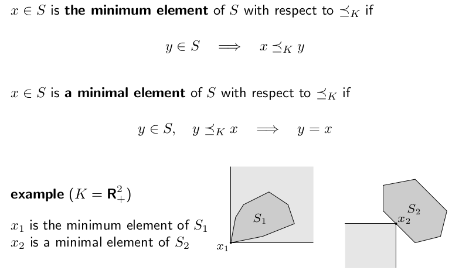
如上图，在 $\mathbf{R}^n_+$ 中，凸集 $S_1$ 的最小元素是 $x_1$，因为它可以在 $R^n_+$ 上与其他任何元素比较（即凸集代表的图像全部包含在阴影部分区域内），并且它比所有元素都小；
凸集 $S_2$ 没有最小元素（因为发现 $\mathbf{R}^n_+$ 总是无法完全盖住这个凸集代表的图形，意味着有些元素间不可比），但它有无穷多个极小元素。其中一个极小元素 $x_2$，因为所有能比较的元素中，没有比它小的（即它的非正轴区域没有任何元素）。可以说 $x_2$ 所在的平边界上所有点都是 $S_2$ 关于 $\mathbf{R}^n_+$ 的极小元素。
2.11 Seperating & Supporting Hyperplane Theorem
超平面分割定理。直觉上非常明显的定理。如果 $C$ 和 $D$ 是两个不相交凸集，那么必然存在向量 $a\ne0$ 和 $b$ 使得：$a^Tx\le b$ 对 $\forall x\in C$ 成立，$a^T x\ge b$ 对 $\forall x\in D$ 成立。感性理解如下图：
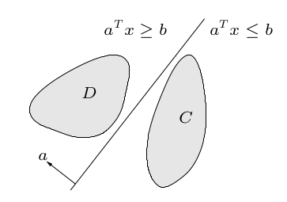
理解：一定存在一个超平面 $\left\{x|a^Tx=b\right\}$ 使得它能够完全划分两个不相交凸集。
在机器学习中，将这个超平面称为 “线性分类器”。
如果要 “严格划分”（去掉等号），还需要作出前提假设：例如 $C$ 是闭集等。
超平面支持定理。直觉上也非常明显。对于一个凸集 $C$，一定能找到一个点 $x_0$ 以及一个超平面 $\left\{x|a^Tx=ax_0\right\}$ （$a\ne0$）使得 $a^Tx\le a^Tx_0$ 对 $\forall x\in C$ 成立。
感性理解如下：
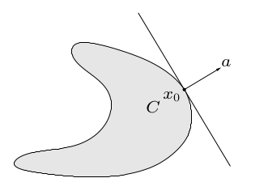
理解：对凸集边界上任意一点 $x_0$，一定存在一个超平面 $\left\{x|a^Tx=ax_0\right\}$ 使得它能够与凸集相切于该点，并且该点处外法线方向与 $a$ 同向（“移动” 超平面切到这个凸集的该点上）。
它可以由超平面分割定理证明出来。
2.12 Dual Cones
对偶锥的定义：对于一个凸锥 $K$，其对偶锥为 $K^*=\left\{y|y^Tx\ge0\space for\space all\space x\in K\right\}$；
形象理解：对偶锥的画法；
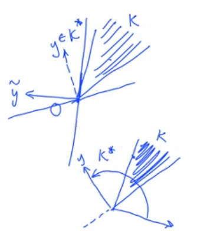
（如果 $K$ 是尖的，那么 $K^*$ 就是钝的，二者是互补、对偶的）数学中有很多种类似的关系，例如共轭、转置等等。
其中 $\mathbf{R}_+^n$、 $\mathbf{S}^n_+$、二阶范式锥是自对偶的（self-dual）。一阶范式锥和无穷阶范式锥互为对偶锥。
注意，正常锥的对偶锥一定是正常锥。
 wechat
wechat alipay
alipay